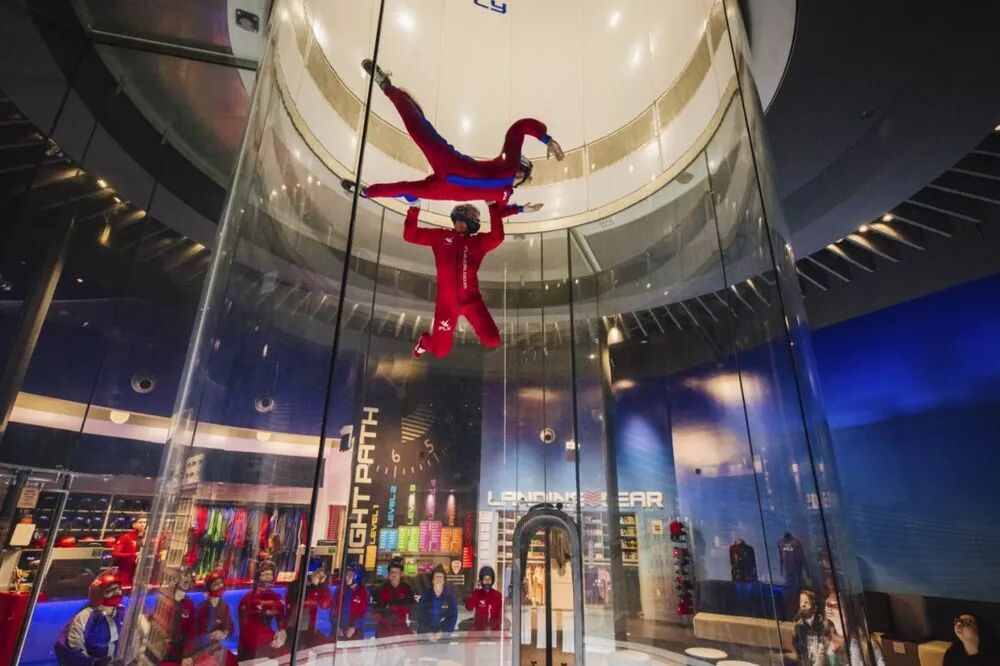
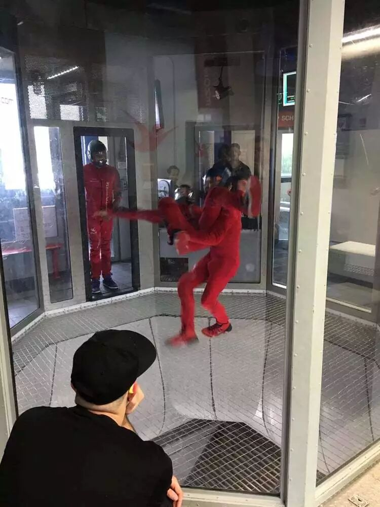
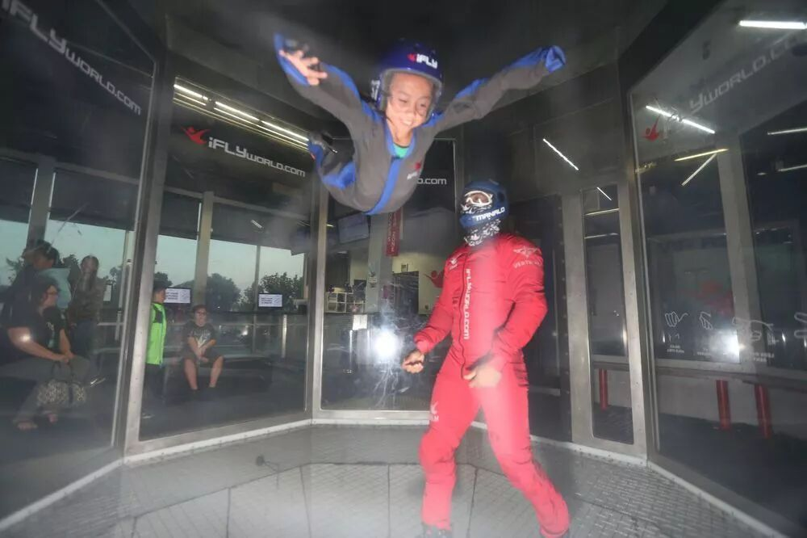
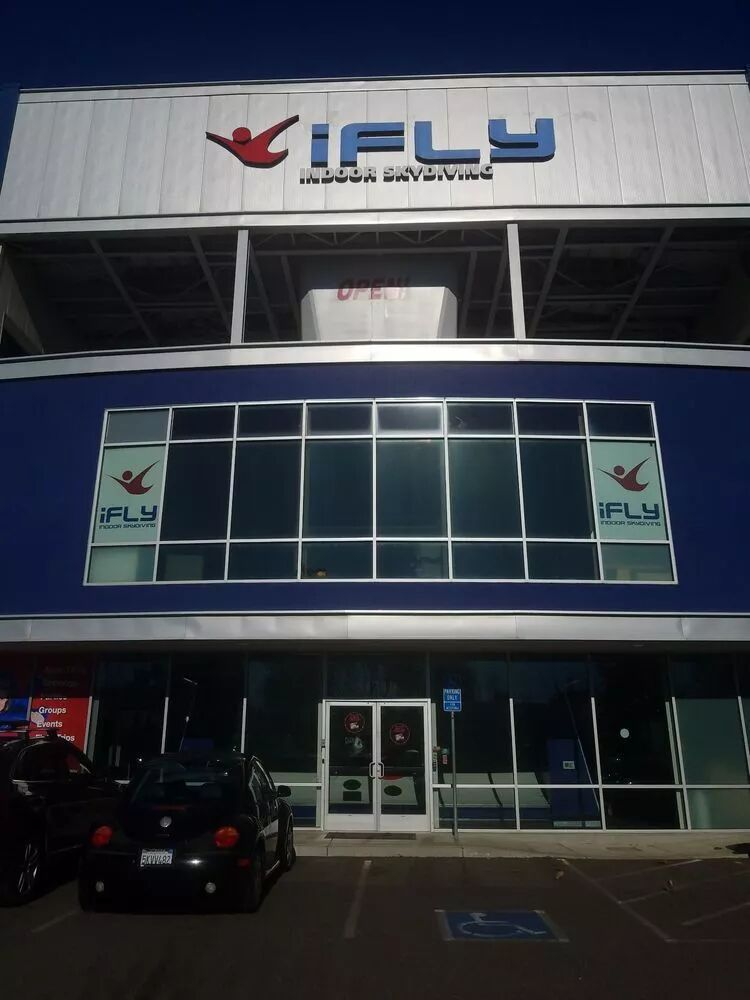

室内跳伞是我两三个月前去玩的一个东西，一直没有找到机会写，这周就写一下吧。
什么是室内跳伞呢？
相传在造飞机的过程当中，为了研究飞机在高风速下如何运动，人们建造了风洞这个神奇的东西，以便在地面上模拟飞机在飞行过程中高风速的状态。
后来风洞这个高风速的环境也被用来做飞行员的跳伞训练。
再后来就有公司把这个东西开发成商业的项目，让普通老百姓也可以体验这个高风速的环境，这也就是我们现在能看到的室内跳伞项目了。
那么这个风洞长什么样子呢？如下图所示，风洞会造在一个很大的玻璃罩里面。在风洞里，人是站在一层很牢的筛格上的。从下面会持续不断地鼓出非常强力的风。

这个风有多强力呢？它可以强力到如果你的人是整个趴着的话，这个风可以把你的整个身体吹得浮起来。
在风洞的旁边会有一个操作人员，他可以控制这个风具体有多强力。根据不同的游客的体重以及身高，他就可以调整这个风力让游客正好可以漂浮起来。
而漂浮的过程中其实特别容易失去平衡。一般来说最容易平衡的标准姿势就是图里小孩这种姿势，两个手和两个脚都张开，尽量增大自己的竖直方向上的表面积。

不过就算是采用了标准姿势，还是很容易不平衡，被吹得翻过去，所以旁边会一直站着一个工作人员，他会一直拽着你帮你保持平衡。
我去的是一个叫iFLY的室内跳伞连锁店，这个牌子在美国已经做得蛮大的了，似乎全美有30+的连锁店。在湾区Union City这边的连锁店从外面看长这个样子。

进去以后，上到二层，房间的中央就是这么一个大的风洞。整个风洞还蛮高的，感觉从这个筛格往上，还至少有三层楼那么高。
进店后没等多久，我们就被工作人员拉着换上衣服，然后看了一段安全教育视频。之后就是每个人都戴上耳塞， 头盔，护目镜等等东西，然后依次被工作人员拉进风洞玩漂浮。
这个店里有一个项目是所谓的高空飞行，就是旁边的控制风力的工作人员帮你把风力继续调大，让你被吹上两层楼的高空，然后再回到一层楼的高度，这样反复几次。当然这不会是你自己一个人在里面保持平衡，风洞里的工作人员会拽着你一起这样上下地飞，感觉还蛮刺激的，有一种反复跳楼的感觉。
店里还有一个项目是VR飞行，其实就是让你戴上一个VR眼镜，然后在风洞里面飞。不过由于他们的那个VR场景实在做得太假了，VR眼镜也很廉价，所以效果真的蛮差的。
嘛基本就是这样，比起真的高空跳伞体验还是差远了，根本没有跳伞的刺激和紧张。
不过相对应的也不会弄得耳朵很痛，或者很恶心之类的感觉，因为没有气压的变化，也不用坐小飞机一路飞上天。
感兴趣的话不妨随便找个周末去玩一下~~国内的话目前似乎这样的店还不太多，似乎重庆开了国内第一家分店，不知道现在还开着没有。